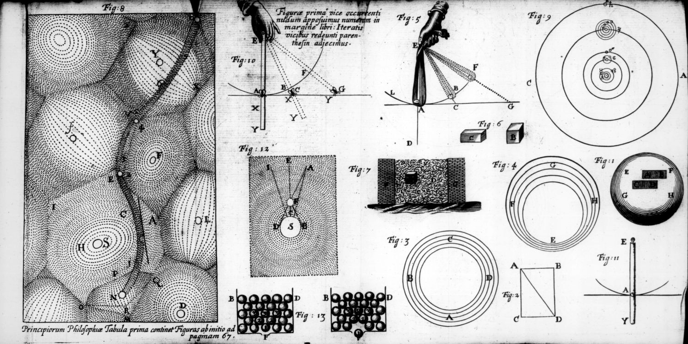
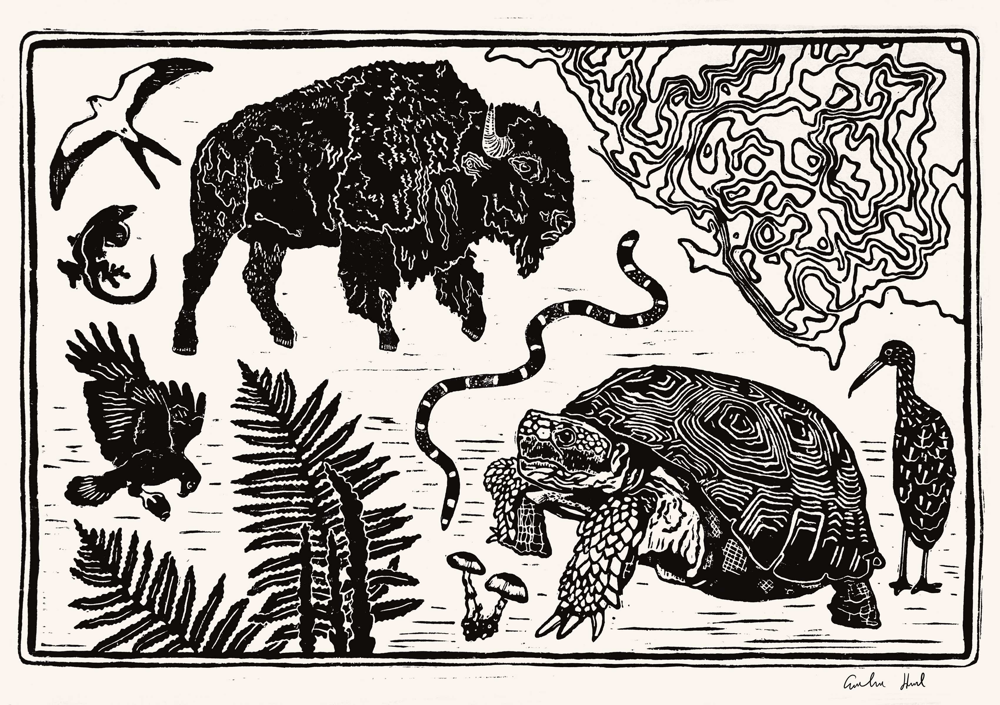

I wanted to see what she saw too, which is why I was there. I’d admired her art for many years. For me, her prints have a way of putting things in a different light. Looking at her prints, I don’t feel as though I’m seeing the environments I’ve become familiar with to the point of overlooking them. It’s the same trees, shrubs, animals, and vivid sky those of us who live here have become accustomed to, but it looks as though everything is illuminated by a strange sun. Numerous words seem to be transposed onto one image, like some sort of fairy land hall of mirrors; you see endless permutations of the same reflected thought.
I also had a question I’d been pondering, and Leslie’s preferred medium of art — linocut — seemed to hold a clue that might help me find the answer. I wanted to know what the nature of nothingness was.
That might seem like an odd thing to be wondering, but I’d been reading the book, “Trespassing on Einstein’s Lawn” by Amanda Gefter, which explores the ways in which modern experimental and theoretical physics has changed our understanding of nothingness. I hadn’t really thought much about the question beforehand, but I couldn’t get it out of my head after I’d finished.
Linocut is a style engraving, which seemed like a good way to look at the topic from a different angle. In linocut, an artist creates images by carving out a block of linoleum. In the final piece, an image is created by the absence of its inverse. In other words, you can only discern the image because part of it is missing.
There are parallels here to the way in which our universe of stuff is created. When you inspect nothing closely enough, you find that nothing and something look more and more like opposite poles of the same sphere.
To explain this connection, we’ll start with a look at Leslie’s unique process then take a short jaunt through the nuts and bolts of our universe, coming out the other side with a mile-high view seen through the engravings of local artist Caroline Hurd.
Pictures of the floating world
The art of engraving — whether with linoleum, wood, stone, metal, etc. — has been around for just about as long as modern humans have. But engraving something to create copies of an image is a relatively new technique. The process of leaving an imprint of the engraving on something else, typically cloth or paper, is called printmaking. It likely got its start somewhere in Asia, where it was used to make copies of Buddhist texts. The oldest complete printed text dates from about 700 CE and was discovered in Korea after would-be thieves blew up part of a temple just as old in search of treasure.
By the 19th century, engraving helped hasten the scientific revolution; biologists hired engravers to illustrate plants and animals, which could be done on wood, copper or other material, and could even be produced — arduously — in color. Woodcuts from 19th century Japan of a style called Ukiyo-e (pictures of the floating world) show just how complex and stunning prints could be.
 Leslie first started engraving by chance while teaching middle school art.
Leslie first started engraving by chance while teaching middle school art.
“The first year I taught, the high school teacher next door said, ‘I hate linoleum. I never want to do this with my students ever again. Do you want all of these supplies for your middle school students?’ I had next to nothing, so I said yes, and I fell in love with it,” Leslie said.
From then on, linocut became her preferred way to interpret the world through art. After a block has been engraved and printed, she paints the peaks and troughs. There’s one piece, called Everglades Life Triptych, that stands out to me as particularly representative of her style and worldview. She sketched most of the scene while working in the Everglades and added the birds later from photographs she’d taken in the wild.
 It looks like a Medieval tapestry, something that would have been hung up in the hallways of castles or manors as a monument to a hallowed object or event. But instead of a religious relict or a battle, the scene is of a swamp.
It looks like a Medieval tapestry, something that would have been hung up in the hallways of castles or manors as a monument to a hallowed object or event. But instead of a religious relict or a battle, the scene is of a swamp.
The ground isn’t visible, giving a slight sense of vertigo. Unmoored from the bottom floor of the terrestrial world, Leslie shows the canopy as it would be seen by one of its inhabitants. A snake curls around a trunk as it ascends the tree in search of food. A birds-nest fern is fittingly occupied by a yellow warbler. Bromeliads, resurrections ferns, and orchids all vie for space while birds cling to branches like trapeze artists. The transoms and spandrels are overgrown with ivy, and the tree bark shines like stained glass.
There are any number of ways to interpret the piece: A celebration of life; a warning of what might be lost if we don’t prevent the development of Florida’s remaining natural areas; a lamentation for what’s already been lost.
I see it as a response to the collective priorities of our species — or, at least, the subset of humans who currently wield the most power and influence. We venerate saints and worship deities made in our own image, but we take for granted the supernatural wonders of life that surround us on a daily basis.
The Triptych was Leslie’s year of magical thinking. I wasn’t surprised when she told me she’d gone through a religious bender during a difficult time in her life. She’d been raised in an Episcopalian community, but at a certain point, its tenets no longer seemed to suffice.
“I started experiencing a lot of death in my life. There just wasn’t anything in Christianity that could help me with that.”
She began studying Celtic spirituality, which she later blended with Buddhism and Sufism. “I started calling myself an Episcopagan.”
I asked her how this altered her perspective of life and death, the most revered and dreaded of opposites. “Our spirits are eternal,” she told me. “But our physical bodies have had to evolve through all of time, so we’ve been rocks, we’ve been bacteria, we’ve been plants, we’ve been trees, we’ve been fish, we’ve been birds, we’ve been insects. We’ve been everything, and that gives me this really loving connection with everything, because everything is my brother and sister.”
This might seem like a radical idea if you were raised in a western culture, but it’s not unusual in the east. It doesn’t quite qualify as a belief; it’s just a different way of looking at things. You can see yourself as part of the world, or — like Tristan and Isolde — you might look at the entirety of the universe and see yourself staring back.
“Then am I
Myself the world;
Floating in sublime bliss,
Life of love most sacred,
The sweetly conscious
Undeluded wish
Never again to waken.”
“Tristan and Isolde,” Act II, Richard Wagner
This is a wonderful vision. It’s even better when you’re able to personally experience it, which I’d wager that almost everyone has at least once in their life. Our species would undoubtedly have a much better chance of survival, and life would be much less fraught, if we all thought this way. But I suspect that these two concepts — unity and separation — are also just two sides of the same coin. We’re only able to comprehend one or the other because we have both to create contrast, like the plateaus and valleys of an engraving.This brings us to something fundamental about our universe and the way we perceive it. Humans have pondered the nature of substance and absence for a very long time, but things have gotten particularly interesting over the last century with the development of the theory of general relativity and quantum mechanics. What exactly is something — matter and energy — and how does it differ from nothing?
Enter the void
But the atomists didn’t get by without being challenged. The philosopher Parmenides viewed things very differently. According to him, nothingness was a mere abstract concept. The universe was actually filled to the brim with a substance called plenum, and no matter where you looked, you would never find a space that lacked this substance.
Aristotle notably sided with Parmenides and added a new type of substance, which he called the aether, to explain how celestial bodies moved through the heavens.

Then, in 1905, Albert Einstein shook things up with two separate discoveries. His theory of special relativity showed that light could in fact travel through empty space without any need for an infinite aether to transport it.
Second, he conclusively demonstrated that atoms of finite size were real — a concept that was still in question at the time — by mathematically describing the movement of particles suspended in water.
Both of these discoveries placed limitations on what could or could not be defined as nothing. Let’s start with the limited size of atoms. Leucippus and Democritus would doubtless have felt vindicated by Einstein.
But things get tricky when it comes to size, of course. Physicists in the 19th and 20th centuries made the crucial discoveries that atoms were actually made of protons, neutrons, and electrons.
Protons and neutrons were thought to be indivisible for a while, until physicists began shooting subluminal electrons at them in underground, mile-long particle accelerators. This causes atoms to explode and allows physicists to sort through the sub-atomic debris. Because of this work, we now know that protons and neutrons are actually Kinder eggs full of quarks.
That’s okay…maybe quarks are the smallest things that exist?
Unfortunately, some very sharp physicists — armed with sophisticated mathematics — demonstrated that quarks might actually be made of tiny vibrating strings.
Could there be anything smaller than a string? Since, in order to talk about strings, you must first invoke the existence of eleven separate dimensions, we’ll just say it’s complicated.
But you can still zoom in further. If you shrink down to the mathematically smallest measurable scale, called the Planck length, you might find yourself surrounded by miniature black holes. Don’t bother asking if there’s anything smaller than the black holes. You won’t like the answer.
At this point, you might be ready to throw in the towel. We’re unlikely to figure out the nature of nothingness by peering increasingly closer at the building blocks of reality. Physicists genuinely don’t know what the smallest thing in our universe is, or if there even is such a thing. Carl Sagan poetically echoed the theory of an infinitely recursive universe in the book and show, “Cosmos.”
“There is an idea — strange, haunting, evocative — one of the most exquisite conjectures in science and religion. It is entirely undemonstrated; it may never be proved. But it stirs the blood. There are, we are told, an infinite hierarchy of universes, so that an elementary particle, such as an electron, in our universe would, if penetrated, reveal itself to be an entire closed universe. Within it, organized into the local equivalent of galaxies and smaller structures, are an immense number of other, much tinier elementary particles, which are themselves universes at the next level, and so on forever.”
But maybe size doesn’t matter. Leucippus and Democritus were wrong about atoms not having any empty space inside them. In some ways, we can think of atoms as being made of mostly empty space with just a dash of matter to give them flavor. What if we took a close look at that emptiness to see if it contains something or nothing?
In the smallest atom, hydrogen, a single proton is distantly orbited by a lone electron roughly 5.3 X 10-11 m away. If a proton ballooned to the size of your head, it’s nearest electric partner would reside at a distance of about two miles. That’s plenty of room to go poking around for nothing.
Except, in quantum physics, electrons never occupy a single space at a given time. Rather, they are in a superposition of every possible location around the atom’s nucleus, until you look at them, and they furtively pick a single position. So the empty space within atoms is not really empty. Instead — because quantum mechanics is weird — it’s a vague expanse of potentiality with fuzzy borders that extend to the edge of the observable universe.
You could try freezing atoms!
If you cooled atoms all the way down to absolute 0 degrees Kelvin, that should get the electrons to stop moving, allowing you to inspect the nothingness between them. But here, quantum mechanics throws us another curve ball.
According to Werner Heisenberg, and a theory he developed called the uncertainty principle, the more you know about a particle’s position, the less you know about its velocity. This is not due to the limitations of scientific instruments, but is instead thought to be an inherent property of matter and energy.
If you could completely freeze an atom, you could determine exactly where its electrons, protons, and neutrons were located, which would mean their velocities would be completely unknowable. Even at the coldest temperatures experimentally achieved in the lab, physicists still record a faint heat from the potential — but not quite actual — velocities of all the constituent particles inside an atom.
We don’t have to restrict ourselves to atoms, though. Let’s do away with them altogether by creating a square-inch-sized vacuum with no particles at all. Surely there would be nothing inside?
Not according to physicist Paul Dirac. You’ll recall that Einstein did away with the idea that an aether permeated the universe, but this isn’t entirely true. Instead, the aether was replaced by a similar medium with a few hardboiled differences.
Dirac postulated the existence of quantum fields, which, like the aether, suffuse the cosmos. According to quantum field theory, everything — both atoms and the space around them — is made of fields. For each elementary particle that we know of — electrons, quarks, neutrinos, etc. — there is a corresponding field that gives rise to them. The fields are considered to be quantum because they can only manifest themselves in discrete quantities, or quanta. The ground state for many of these fields is zero, which corresponds to a space with “no” particles (the notable exception being the Higgs field. If you want to know why, there’s fun sombrero visualization that helps explain it).
An absence of particles sounds promising! Even if the world is permeated with fields, perhaps those fields are perforated with emptiness. You probably know where this is going…
Quantum field theory has one last trick up its sleeves to subvert out expectations, and again, we have Heisenberg to thank for it. Not only can we not measure a particle’s momentum and position simultaneously, it turns out that time and energy also have a similarly inverted relationship. The more you know about how much energy a particle has, the less you know about how long the particle will remain in that energetic state. Again, this is not due to a limitation in scientific instruments but instead is an inherent property of matter and energy. This means the longer a particle remains in a particular state, the more precisely you can measure its energy.
Take a hydrogen atom, for example, which has one proton, one neutron, and one electron. Hydrogen is fairly stable, meaning it sticks around in the same form for a long time; most of the hydrogen around today was formed seconds after the birth of our universe. That means you can precisely measure the amount of energy stored in its subatomic particles.
On incredibly small time scales, on the order of a septillionth (1024) of a second, the less certain you can be about how much energy a particle or a field contains. If you look closely at our square inch of empty space, you’ll see that what you mistook for nothing is actually a roiling sea of what physicists call virtual particles.
In a span of time so brief that even the universe seems unable to register it, virtual particles briefly materialize from nothing and disappear back into nothing. The process occurs so quickly that it doesn’t technically violate the first law of thermodynamics, the one that says energy can neither be created nor destroyed.
We have to be careful here, however. Virtual particles aren’t real, in the sense that they don’t stick around and cannot be directly observed. In a way, they’re merely a mathematical tool to describe something for which we don’t seem to have an analogue up here in the macro world. But whatever virtual particles are or are not, you and I observe them indirectly all the time. Virtual photons are the reason we have electricity in our homes and magnets on our fridge. Virtual gluons hold quarks together, which allows for the formation of atoms, molecules, and planets. Virtual W and Z bosons spark the radioactive decay that powers our sun. An as-of-yet unknown virtual particle might mediate gravity.
In any case, it would seem that we’ve hit a wall. No matter where or how hard we look, we seem incapable of finding a discrete space that can be defined as something and another space that is devoid of that something. Instead, both seem to be polar but unified properties of a grand whole, which is us. Einstein put it this way, “We may therefore regard matter as being constituted by the regions of space in which the field is extremely intense… There is no place in this new kind of physics for both the field and matter, for the field is the only reality.”
Down here, at the subatomic scale where time no longer has any meaning we’re capable of comprehending, there is one additional property of matter that helps clarify what our universe of stuff is made of and creates the equally perplexing mystery of why we have a universe of stuff at all.
In the process of formulating the first iteration of quantum field theory, Paul Dirac hit a snag. Dirac was exclusively modeling electrons, and the math he’d derived beautifully and accurately described their behavior, but it would only do so if he presupposed the existence of an entirely new type of particle, one with the exact same properties (mass, spin) as an electron, but a positive rather than negative electric charge.
Instead of throwing out the math and starting from scratch, Dirac left the new type of matter in his equations and concluded that the universe contained within it a type of matter that physicists had been totally unaware of up to that point. Four years later, positrons were indirectly observed in a bubble chamber, verifying his prediction. Scientists had discovered anti-matter.
Matter and anti-matter are also always created in equal amounts. Virtual particles with mass and charge, for example, always arise from the void in matter/anti-matter pairs. In fact, there theoretically should have been equal amounts of matter and anti-matter created in the first moments of the universe. If that had been the case, all of it would have combined and annihilated, leaving behind nothing but energy. Since we live in a universe of stuff, we can be fairly confident this didn’t happen, but why is that the case?
There are other, mathematically equivalent, ways to think of anti-matter that can help answer this question. On our way to discussing them, we’ll swim back to the shallows with the help of a fictional girl with synesthesia and the prints of another local artist with a passion for Florida’s wild spaces.
Dirac’s sea and a Mango-shaped space
Now imagine having done this for every new thing you’d encountered for the first several years of your life. Then, one day while talking with family or friends, you realize the way that you perceive the world is qualitatively different from the way others perceive it.
Some might feel non-plussed after realizing the world they’re familiar with is different from the one conceived by others. Some, like the character in the book, might feel rattled at their window into reality being suddenly called into question.
When Caroline Hurd read “A Mango-Shaped Space” as a kid, this revelation was affirming. She remembers thinking, “Oh! This is a thing. I figured this was just me being weird.”
Caroline has a mild form of synesthesia. For her, some objects are associated with a faint impression of color. She’s also good at distinguishing colors at opposite ends of the visible spectrum — blue, red; black, white — but medium values often bleed together.
The book’s titular character is a cat named Mango, and the title is a reference to the hole Mango left in the minds of those who loved him when he died. The mango that once elicited all sorts of joyful feelings when he was alive sparked emotions of a very different sort in his absence. Joy was replaced with sorrow, contentment with distress. His departure created a sort of anti-mango.
This is same logic Paul Dirac used in the conceptualization of an immense electric sea, in which positrons are created by the absence of electrons. I’d be remiss if I didn’t mention there are entire religions and spiritual practices built on this axiom. In Taoist philosophy, “All can see beauty as beauty only because there is ugliness. All can know good as good only because there is evil.”
Dirac’s interpretation has since been replaced with other, mathematically equivalent ways of picturing anti-matter. If string theory turns out to be the correct model of reality, matter and anti-matter would be considered different vibrational modes of the same string. In the current framework of quantum field theory, anti-particles are considered to be exactly the same as ordinary particles but with a complementary charge. They both have the same size and mass, but like a mirror image, their charges are flipped.
This reversal is referred to as charge, time and parity symmetry, which is baked deeply into the structure of our universe. But there are, apparently, exceptions to this rule. Physicists have lots of theories on how CPT symmetry might be violated, but the ones we are confronted with the most obviously are the asymmetries of time and anti-matter.
Time only seems to move in one direction, meaning it does not have a mirror image that we’re aware of. That means it breaks CPT symmetry. There is also an imbalance of matter and anti-matter in our universe; otherwise, we wouldn’t be here. How, then, does one explain all of existence?
My favorite analogy for conceptualizing this involves cake batter. In the early moments immediately following the big bang, the universe could be thought of as a mix of raw ingredients that were combined to make a cake. Most of that mix was scraped out, baked and eaten, a metaphor for the way matter and anti-matter annihilate when they meet. The leftover batter that got stuck to the side of the bowl is what hardened into our universe.
Or, according to a more recent theory, maybe there’s an anti-universe in which time runs backward and there’s more anti-matter than matter. The topic is currently up for debate.
In this universe, the symmetry opposites helped Caroline pick up linocut much faster than other mediums she’d worked with. In linocut, “I like to say that you have to do linocut backwards, which works with my backwards brain. It just clicked,” she said.
Caroline created the business Cassava and Rye. When I sat down to talk to her in May, she’d just transitioned to being a full-time artist after several years of creating and selling her work as a side hustle. Like Leslie, she draws her inspiration from the wilderness. Much of her work depicts local wildlife, from birds to plants to algae to fungi and everything in between. Also like Leslie, Caroline wants to give people a glimpse of the world filtered through the lens of her perception.
 “Art is such a translation of the world. This is what I see. Is this what you see? And how can we connect over that,” she said.
Caroline is a recent Gainesville transplant. She grew up in Michigan and worked in several different places before coming here. She did a stint doing sea turtle conservation in the Virgin Islands and spent a memorable summer in the Redwoods, where she helped run a nature camp for kids in Los Angeles who rarely got the chance to visit wild spaces.
She majored in wildlife ecology in college and never lost the habit of thinking scientifically. One of her pieces I love most is a watercolor print depicting the microscopic organisms that live in ponds. Many artists tend to skip over these smaller, traditionally less appealing, aspects of nature, but Caroline embraces it.
“I feel like science is just beauty magnified. It’s a way of zooming in on things that astound you. A tree is beautiful, but have you ever looked at a cell? Have you ever watched a protein walk?”
For Caroline, zooming in or out opens new vistas, each equally as beautiful as the ones at lower and higher scales. Her art briefly pulls you from the malaise of everyday experience and reminds you of how strange and wonderful everything is.
If there’s a point to be taken away from this lengthy foray, it’s that the universe is weird and no one completely understands it. The same patterns seem to trickle up and downstream, though, like a Mandelbrot set.
One of the most deeply ingrained patterns is the binary yes and no, love and hate, birth and death divide. One the one end of this permeable boundary is a dense substance, on the other, a substance that is less so. The movement of both substances as they equilibrate creates the osmotic flow of life.
The other point to take from this is that Leslie and Caroline’s art is awesome, and you should check it out!